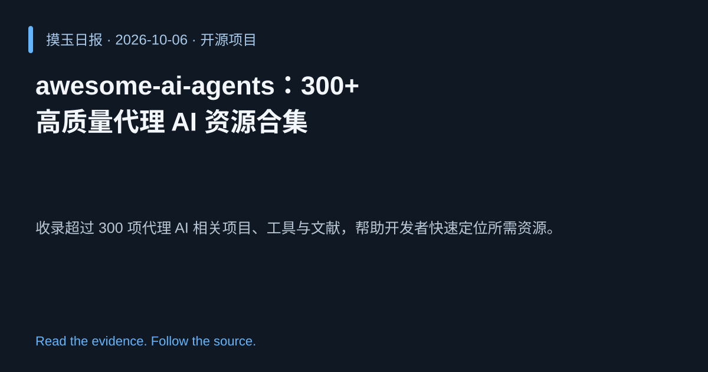

2026-10-06 · Asia/Shanghai · 开源项目 · #9
awesome-ai-agents：300+ 高质量代理 AI 资源合集
slavakurilyak/awesome-ai-agents
收录超过 300 项代理 AI 相关项目、工具与文献，帮助开发者快速定位所需资源。
为什么值得关注
聚合散落的代理资源，节省时间并促进社区协作与创新。
- 覆盖代理框架、工具、示例代码等多个维度。
- 持续更新，链接到热门项目如 free-claude-code、deepseek-harness、ollama。
- 开源社区维护，便于贡献与扩展。

热度 40.4 / 100；排名与评分保留该期记录。